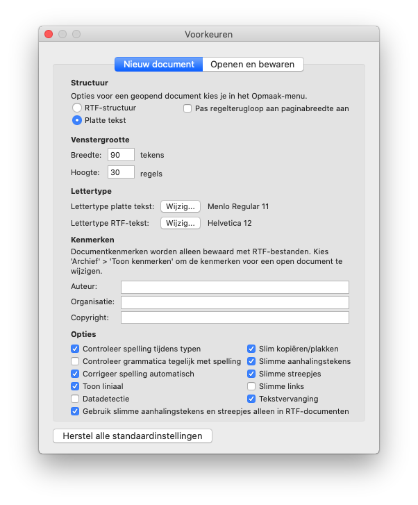

Tekstbestanden¶
De uitwerkingen van bijvoorbeeld de Picobot opdrachten moeten in platte tekst als .txt-bestanden worden geschreven. Je zal verder ontdekken dat de Python code die je gaat schrijven ook platte tekst is (maar dan met een .py bestandsnaamextensie)!
Het is belangrijk om bekend te raken met het maken en bewerken van tekstbestanden. Programma’s zoals Microsoft Word maken geen platte tekst, althans niet standaard.
Een experiment
Waarom maakt Microsoft Word standaard geen tekstbestanden? Open Microsoft Word, typ wat tekst en sla jouw werk op. Je zal zien dat een .docx-bestand wordt aanmaakt (bijvoorbeeld Test.docx) en verander nu de naam van dit bestand waar je .docx wijzigt in .zip. Vervolgens zal je zien dat jouw systeem het bestand zal tonen als een gecomprimeerd bestand met als inhoud meerdere bestanden! Een standaard Microsoft Word document is met andere woorden een verzameling van bestanden en niet een enkel tekstbestand …
Hier vind je verdere tips voor het maken en bewerken van tekstbestanden met:
onze aanbevolen (en veelzijdige) tekstverwerker VSCode die Python én tekstbestanden goed ondersteunt en beschikbaar is voor verschillende systemen (macOS, Windows, Linux en anderen). We raden je aan VSCode uit te proberen!
alternatieven als Sublime Text, Atom, het Web en vele andere mogelijkheden waaronder de standaard editors onder Windows, Mac en Linux …
Visual Studio Code¶
Of je nu Windows, Mac of Linux gebruikt, de tekstverwerker Visual Studio Code (VSCode) is een uitstekend hulpmiddel voor het bewerken van platte tekst bestanden.
Eenmaal geïnstalleerd zal je het volgende icoon op jouw desktop of onder geïnstalleerde applicaties zien: 
Je kan VSCode nu starten en platte tekst openen, bewerken of plakken, bijvoorbeeld:


Windows¶
Voor het maken van een .txt-bestand in Windows kan je het standaard programma Kladblok (Notepad) gebruiken. Zoek dit programma op, open het, typ jouw tekst en sla het op onder de naam die in de opdracht wordt gevraagd (bijvoorbeeld wk1ex0.txt):

Verkenner¶
Let op dat Windows Verkenner (Explorer) bestandsextensies (.txt, .py, .docx etc.) standaard niet zal tonen! Zet dit aan via Beeld en vink daar Bestandsnaamextensies aan:

Mac¶
Op een Mac kan je een .txt tekstbestand maken met het standaard OS X programma TextEdit. Zoek naar dit programma en open het. Standaard zal TextEdit bestanden opslaan als rich text format formaat (RTF) en dit is geen platte tekst, kies in de voorkeuren van TextEdit om bestanden als platte tekst op te slaan:

Als je dit hebt gedaan dan zal TextEdit er als volgt uitzien als je bestanden gaat bewerken:

Linux¶
Linux heeft veel opties voor het bewerken van tekstbestanden. Eén van de meest eenvoudig te gebruiken editors is nano die wordt opgestart in een terminal (opdrachtregel) venster. Typ alleen nano of bijvoorbeeld nano hw1pr0.txt op de opdrachtregel en onderaan het scherm verschijnt een lijst met nuttige commando’s. Het circumflex karakter (^) geeft de bedieningstoets aan, dus bijvoorbeeld ^X betekent Ctrl ingedrukt houden en op de X-toets drukken.
Een veel krachtiger editor is emacs die populair is bij ervaren gebruikers omdat het zo veelzijdig is. De leercurve is echter steil (gelukkig is er een ingebouwde tutorial, type de F1-functietoets gevolgd door t). Als je besluit om emacs te proberen, vergeet dan niet dat je het programma kan afsluiten door gewoon het venster te sluiten of door Ctrl-X en vervolgens Ctrl-C te typen (hoewel ervaren emacs gebruikers de editor nooit verlaten, ze laten het venster open zodat het op elk moment kan worden gebruikt).
Tot slot zal je misschien van vim hebben gehoord. Hoewel vim populair is raden we het gebruik ervan af. Het heeft een lastige gebruikersinterface en is net zo moeilijk te leren als emacs, misschien zelfs moeilijker! Het is niet voor niets dat “how to exit vim” een veelgestelde vraag aan Google is … (hint: :q of Esc:q, afhankelijk van welke modus vim zich in bevindt)

Dat vim lastig te gebruiken (en af te sluiten!) is levert gelukkig ook humor op. Deze meme is gebaseerd op de film Arrival waar mensen proberen te communiceren met buitenaardse wezens.